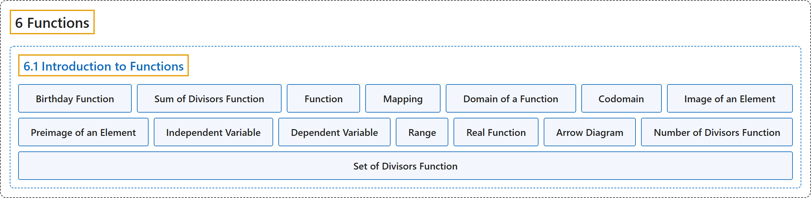

6.1 Introduction to Functions
Classification

Glossary
| Term | Definition | 中文翻译 | Source |
|---|---|---|---|
| 6 Functions 函数 |
(No definition) | （无定义） | Sundstrom, 2022, chapter 6 |
| 6.1 Introduction to Functions 函数入门 |
(No definition) | （无定义） | Sundstrom, 2022, section 6.1 |
| Birthday Function 生日函数 |
"Let \(b\) be the function that assigns to each person his or her birthday (month and day). The domain of the function \(b\) is the set of all people and the codomain of \(b\) is the set of all days in a leap year (i.e., January 1 through December 31, including February 29). (a) Explain why \(b\) really is a function. We will call this the birthday function." | 设 \(b\) 是给每个人指定其生日（月和日）的函数。函数 \(b\) 的定义域是所有人的集合，\(b\) 的陪域是闰年中所有日子的集合（即 1 月 1 日到 12 月 31 日，包括 2 月 29 日）。(a) 解释为什么 \(b\) 确实是函数。我们把它称为生日函数。 | Sundstrom, 2022, section 6.1 |
| Sum of Divisors Function 因数和函数 |
"Let \(s\) be the function that associates with each natural number the sum of its distinct natural number divisors. This is called the sum of the divisors function." | 设 \(s\) 是让每个自然数对应它的不同自然数因数之和的函数。它称为因数和函数。 | Sundstrom, 2022, section 6.1 |
| Function 函数 |
"A function from a set \(A\) to a set \(B\) is a rule that associates with each element \(x\) of the set \(A\) exactly one element of the set \(B\text{.}\)" | 从集合 \(A\) 到集合 \(B\) 的函数是一种规则，它让集合 \(A\) 中的每个元素 \(x\) 对应恰好一个元素（集合 \(B\) 中的）。 | Sundstrom, 2022, section 6.1 |
| Mapping 映射 |
"A function from \(A\) to \(B\) is also called a mapping from \(A\) to \(B\text{.}\)" | 从 \(A\) 到 \(B\) 的函数也称为映射（从 \(A\) 到 \(B\)）。 | Sundstrom, 2022, section 6.1 |
| Domain of a Function 函数的定义域 |
"Let \(f \colon A \to B\text{.}\) (This is read, “Let \(f\) be a function from \(A\) to \(B\text{.}\)”) The set \(A\) is called the domain of the function \(f\text{,}\) and we write \(A = \text{ dom} ( f )\text{.}\)" | 设 \(f \colon A \to B\)（读作“设 \(f\) 是从 \(A\) 到 \(B\) 的函数”）。集合 \(A\) 称为函数的定义域 \(f\)，记作 \(A = \text{ dom} ( f )\)。 | Sundstrom, 2022, section 6.1 |
| Codomain 陪域 |
"The set \(B\) is called the codomain of the function \(f\text{,}\) and we write \(B = \text{ codom} ( f )\text{.}\)" | 集合 \(B\) 称为函数的陪域 \(f\)，记作 \(B = \text{ codom} ( f )\)。 | Sundstrom, 2022, section 6.1 |
| Image of an Element 元素的像 |
"If \(a \in A\text{,}\) then the element of \(B\) that is associated with \(a\) is denoted by \(f( a )\) and is called the image of \(\boldsymbol{a}\) under \(\boldsymbol{f}\)." | 若 \(a \in A\)，则 \(B\) 中对应于 \(a\) 的元素记作 \(f( a )\)，称为 \(\boldsymbol{a}\) 在 \(\boldsymbol{f}\) 下的像。 | Sundstrom, 2022, section 6.1 |
| Preimage of an Element 元素的原像 |
"If \(f( a ) = b\text{,}\) with \(b \in B\text{,}\) then \(a\) is called a preimage of \(\boldsymbol{b}\) for \(\boldsymbol{f}\)." | 若 \(f( a ) = b\)，其中 \(b \in B\)，则 \(a\) 称为原像，即 \(\boldsymbol{b}\) 关于 \(\boldsymbol{f}\) 的原像。 | Sundstrom, 2022, section 6.1 |
| Independent Variable 自变量 |
"In this case, we consider \(x\) to be an unspecified object that can be chosen from the set \(A\text{,}\) and we would say that \(x\) is the independent variable of the function \(f\) and \(y\) is the dependent variable of the function \(f\text{.}\)" | 这时我们把 \(x\) 看作可以从集合中选取的未指定对象 \(A\)，说 \(x\) 是函数 \(f\) 的自变量，\(y\) 是函数 \(f\) 的因变量。 | Sundstrom, 2022, section 6.1 |
| Dependent Variable 因变量 |
"When we have a function \(f \colon A \to B\text{,}\) we often write \(y = f(x)\text{.}\) In this case, we consider \(x\) to be an unspecified object that can be chosen from the set \(A\text{,}\) and we would say that \(x\) is the independent variable of the function \(f\) and \(y\) is the dependent variable of the function \(f\text{.}\)" | 当有函数 \(f \colon A \to B\) 时，常写成 \(y = f(x)\)。这时我们把 \(x\) 看作可以从集合 \(A\) 中选取的未指定对象，说 \(x\) 是函数 \(f\) 的自变量，\(y\) 是因变量（函数 \(f\) 的）。 | Sundstrom, 2022, section 6.1 |
| Range 值域 |
"The set \(\left\{ {f( x ) \mid x \in A} \right\}\) is called the range of the function \(\boldsymbol{f}\) and is denoted by \(\text{ range} \left( f \right)\text{.}\)" | 集合 \(\left\{ {f( x ) \mid x \in A} \right\}\) 称为函数的值域 \(\boldsymbol{f}\)，记作 \(\text{ range} \left( f \right)\)。 | Sundstrom, 2022, section 6.1 |
| Real Function 实函数 |
"Because we use the Cartesian plane when drawing this type of graph, we can only use this type of graph when both the domain and the codomain of the function are subsets of the real numbers \(\mathbb R\text{.}\) Such a function is sometimes called a real function." | 由于画这类图要用笛卡尔平面，所以只有当函数的定义域和陪域都是实数集的子集（\(\mathbb R\)）时才能用这类图。这样的函数有时称为实函数。 | Sundstrom, 2022, section 6.1 |
| Arrow Diagram 箭头图 |
"A convenient way to illustrate or visualize this type of function is with a so-called arrow diagram as shown in Figure 6.6." | 说明或直观展示这类函数的一种方便方法是所谓的箭头图，如图 6.6 所示。 | Sundstrom, 2022, section 6.1 |
| Number of Divisors Function 因数个数函数 |
"Let \(d\) be the function that associates with each natural number the number of its natural number divisors." | 设 \(d\) 是让每个自然数对应它的自然数因数个数的函数。 | Sundstrom, 2022, section 6.1 |
| Set of Divisors Function 因数集函数 |
"A function that is related to this function is the so-called set of divisors function. This can be defined as a function \(S\) that associates with each natural number the set of its distinct natural number factors." | 与此相关的一个函数是所谓的因数集函数。它可以定义为一个函数 \(S\)，让每个自然数对应它的不同自然数因数组成的集合。 | Sundstrom, 2022, section 6.1 |
References
Sundstrom, T. (2022). Mathematical reasoning: Writing and proof (Version 2.1; PreTeXt edition by Grand Valley State University). Retrieved October 30, 2026, from https://gvsuoer.github.io/sundstrom-textbook/frontmatter.html